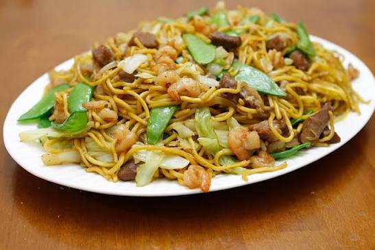

Pancit Canton

Recipe Information
Description
| Servings |
Preparation Time |
Cooking Time |
| 4 people |
15 minutes |
30 minutes |
Pancit is a traditional Filipino noodle dish made with noodles, vegetables, and meat. It is commonly served during celebrations and gatherings.
Ingredients
| Ingredient |
Quantity |
| Pancit noodles |
500 g |
| Squid Balls |
500 g |
| Chicken |
200 g |
| Chicken Liver |
200 g |
| Green beans |
1 Cup |
| Bell Pepper |
1 piece |
| Garlic |
5 cloves |
| Soy sauce |
3 tablespoons |
| Water |
2 cups |
| Onion |
1 peice |
| Fish Sauce |
1 tablespoon |
| Oyster Sauce |
3 tablespoon |
| Chicken Cube |
1 peice |
| Cooking Oil |
3 tablespoon |
| Salt and Pepper |
To taste |
Steps
- Heat oil in a pan.
- Fry the squid balls until slightly brown.
- Remove from the pan and set it aside.
- Sauté garlic and onion.
- Add the chicken and cook until done.
- Add the chicken liver.
- Add the carrots.
- Add fish sauce and saute.
- Cook for 3 minutes.
- Then add the cabbage and saute until half cooked.
- Remove the veggies from the pan and set it aside.
- Pour 3 cups of water to the pan.
- Add soy sauce, salt and pepper.
- Add the chicken cube and stir.
- Add the pancit noodles.
- Then cook for a few minutes until the sauce dries off.
- Add the oyster sauce and mix.
- Add the veggies and mix everything.
- Serve hot.
Pancit Canton Cooking Video
Recipe Feedback
Back to Home